由校內數學、自然與資訊專長教師跨域組成，歷經 7 場次高密度共備與入班實踐：
召集人謝敦元、李仁耀、曾泊淞、王怡婷，專長涵蓋國小數學、創客機械與資訊科技。
從教材迷思剖析、跨校赴南投鯉魚國小創客參訪、公開試教到前後測成效研討。
每場次落實 2~3 節深度共備研討與實體機構除錯，課堂公開試教完整記錄。
全案鐘點費 16 節 16,000 元 100% 執行核銷完畢，成果表、簽到表與領據全備齊。
中正國小社群聚焦「將抽象重量具象化」，依循標準研發歷程循序推動：
深入分析三年級「公斤與公克」學習盲點，開箱智高零件庫，定調自製天平研發路徑。
解決轉軸阻尼與力臂對稱；親赴南投鯉魚國小特聘陳建安名師座談，傳承機關王技術。
三年丙班公開試教，驗證 100% 學生動手參與；試教前後測量化分析理解度大增 28.5%！
將天平改裝為世界機關王 8 迴連續觸發開關；完成附件 6 正式教案送件，無瑕結報。
社群教師共備診斷傳統課堂困境，確立以自製教具作為核心解方：
市售彈簧秤將彈簧力學隱藏在塑膠殼內，指針未歸零學生不知緣由，格值讀數常把一小格誤判為 10g。
運用智高積木自組等臂天平，力臂長度、轉軸支點與吊盤重力完全裸露，讓力矩平衡看得見、摸得著！
將抽象數學文字題化為手動增減積木：左傾就加積木、超重就減積木，手腦並用建立深刻量感直覺。
社群將課綱條目精準轉化為積木操作任務，落實素養導向設計：
| 課綱代碼 | 學習內容 / 表現條目 | 智高積木 STEAM 課程轉化重點 |
|---|---|---|
| n-II-8 | 認識重量單位「公斤」、「公克」及其關係，並做相關計算。 | 以智高 5g 單位積木為基底，透過逐個疊加累積至 100g、500g，實體建立量感基準。 |
| n-II-9 | 理解等臂天平原理，進行重量的直接比較與間接比較。 | 動手組裝 20 孔等臂機構，透過指針中線垂直判定平衡，理解槓桿力矩對稱性。 |
| n-II-2 | 熟練兩步驟四則問題，並能合理解釋解題過程。 | 將加減法具象化為天平增減積木：傾斜時「加法補平」或「減法移除」，化抽象為操作。 |
歷經多次共備修改，定稿由感官到結構、再由結構到數理計量的完整學習歷程：
• 盲測比較保麗龍與金屬球。
• 體會手部疲勞與主觀估測誤差。
• 引發對科學標準測量工具的強烈需求。
• 掌握梯形底座、橫樑與低阻尼轉軸。
• 排除卡榫摩擦力干擾，完成指針垂直歸零。
• 透過指針傾斜直觀辨識輕重與水平平衡。
• 5g 單位積木加減微調解題。
• 兩步驟加減法情境具象操作實證。
• 小組合作秤量生活文具並完成任務單。
社群精心設計兩道感官對比實驗，引導學生自主發現科學工具的不可或缺：
• 社群準備體積相差 5 倍的材料，讓學生雙手閉眼盲測。
• 震撼發現掌心下沉的竟是小鐵球，破除視覺欺騙，奠定密度概念。
• 學生從被動聽講轉為主動質疑：「不能只看外表，必須有工具量！」
• 當測量重量相近的橡皮擦與膠水時，手腕肌肉快速疲勞產生誤差。
• 小組內各執一詞，社群教師順勢引導達成共識：
「我們需要客觀、穩定、不會累的科學天平！」
社群歷經 3 代零件選配與測試，定稿最適合國小學童操作的標準教具：
三角形與梯形幾何加固，提供極致平穩低重心，避免量測時傾倒。
支點居中，左右各 10 孔完全對稱，確保槓桿力臂長度分毫不差。
嚴選光滑軸套，消除卡榫摩擦力，讓微小 2g 重量變化也能靈敏擺動。
雙繩垂直吊掛承物盤，承載各式生活待測物，確保重力垂直向下。
社群教師反覆調校機械細節，確保測量具備極高靈敏度與重現性：
初版天平卡榫摩擦過大導致指針遲滯，社群改採光滑軸套與低摩擦軸心，靈敏度躍升至 2g 感應！
基座中央標記高對比鉛直基準線，當指針與中線齊平即代表完美平衡，消除目測視角誤差。
社群教師客製專用分裝盤，學生組裝時間由 20 分鐘大幅縮減至 12 分鐘，高效率銜接課堂教學。
於三年丙班落實公開觀議課，四位社群教師全員觀課並詳實議課紀錄：
• 學生分組動手組裝天平參與率達 100%。
• 學生自主發現指針未歸零並手動微調。
• 黑板位值轉換表有效支持小組記錄數據。
• 學生對 5g 積木疊加反應熱烈。
• 少數組別懸吊繩長度不一致影響水平。
• 建議將任務紀錄單加入「估測 vs 實測」對照欄。
• 吊盤改採固定長度插銷卡榫確保左右等高。
• 增設小組同儕互評規準，兼顧歷程性評量。
• 形成附件 6 正式教案之標準化作業程序。
引導學生從個別非標準單位，跨越至標準公克計量的鷹架任務：
• 先用花片彈珠發現各組標準不一。
• 體認全世界需要統一重量標準的公克公制價值。
• 社群實測智高正方體積木每顆恰為 5 公克。
• 學生數算顆數乘以 5，乘法與重量直觀連動。
• 小組挑戰秤量鉛筆盒、剪刀與橡皮擦。
• 在另一盤加減積木微調平衡，完成量化紀錄。
社群將課本抽象算則轉化為實體增減動作，徹底打通學生解題瓶頸：
• 現象：天平左傾，指針偏右。
• 思考：要使指針歸零平衡，右盤還需要加多少公克？
• 操作：右盤再補進 3 顆 5g 積木（+15g）。
• 算式：35 + 15 = 50（公克）。手動補平驗證算則！
• 現象：連盒帶物共 80g，已知空紙盒重 20g。
• 思考：內容物真正重量是多少？
• 操作：從砝碼盤中直接取下代表盒重的 4 顆 5g 積木。
• 算式：80 - 20 = 60（公克）。徹底根除學生對去皮運算的困惑！
本社群於第一場次共備時，深入剖析傳統秤重教學為何難以建立真實量感：
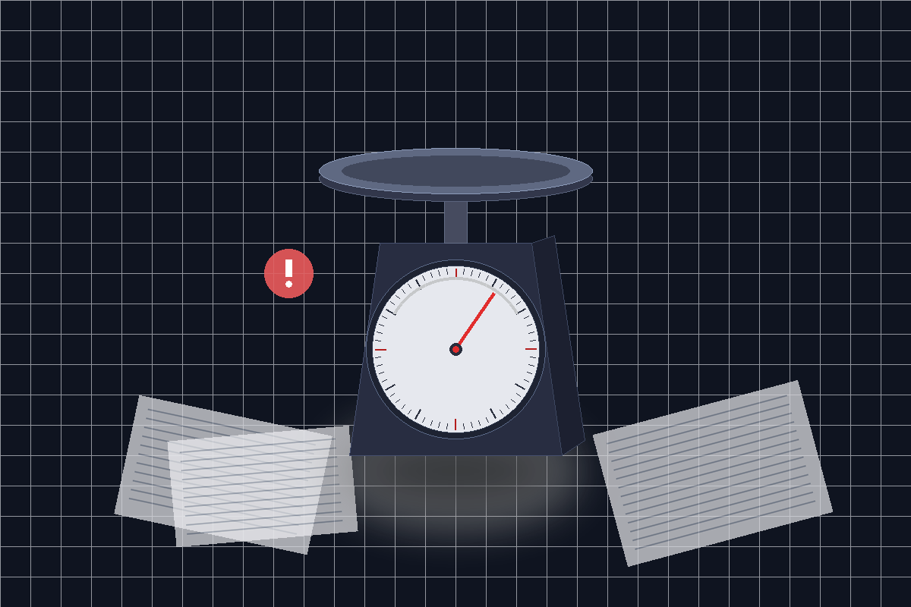
• 黑盒子效應：市售彈簧秤內部力學結構封閉，指針未歸零學生卻直接讀數。
• 刻度判讀挫折：面對「1大格100g、5小格」細密刻度，常誤算為一格 10g。
• 抽象死背公式：僅靠紙筆背誦「1公斤＝1000公克」，缺乏真實重量體感。
• 算則操作脫節：紙筆加減法會算，但實際秤重配平與去皮時卻無從下手。
本社群以自製 20 孔等臂天平與 5g 標準積木砝碼，實現具體可感的量感教學：
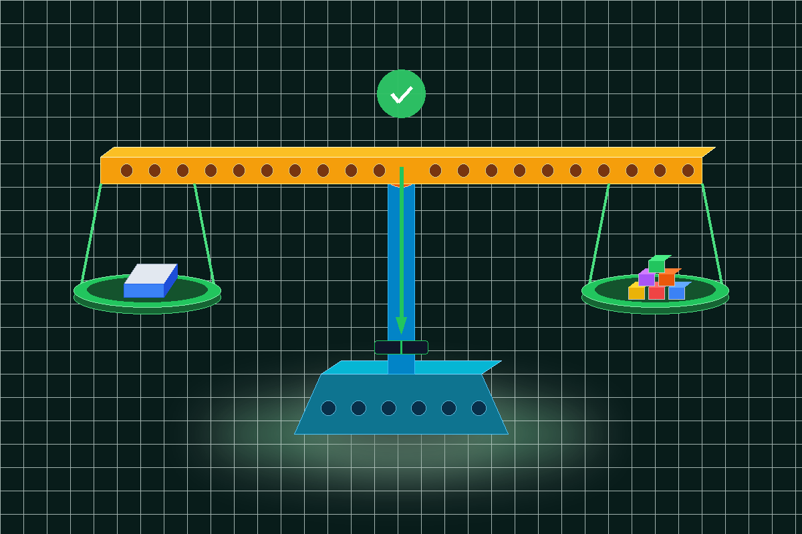
• 結構透明可視：親手組裝智高等臂天平，直觀理解支點、力臂與歸零原理。
• 5g 積木定量：透過每顆 5g 智高積木逐一累加，體會非標準到標準公克進程。
• 手腦合一算則：較輕補積木（加法）、去皮減積木（減法），算式與動作同步。
• 試教實證躍升：前後測理解度顯著成長 28.5%，課堂學習滿意度達 96.8%！
社群將測量概念延伸至四年級跨域科技與體育健康課程：
將 micro:bit 晶片固定於跳繩握把，利用內建 3 軸加速度計即時感測學生甩繩頻率與加速度峰值。
透過藍牙 Radio 廣播將跳繩次數與動能曲線即時投影於大螢幕，激發學生運動自主挑戰慾望。
結合四年級統計圖表單元，將運動大數據轉化為個人化體適能折線圖，完美展現科技賦能教育價值。
社群將微型天平槓桿原理，昇華為大型競賽連續連鎖動態關卡：
將三年級所學等臂天平改裝為「重力傾斜開關」，當鋼珠滾入托盤時觸發下一階段連鎖機構。
結合減速齒輪箱、滾珠軌道與凸輪機構，完成世界機關王競賽指定之 8 迴連續動作，穩定度達 90% 以上。
由社群教師利用午休與社團時間，帶領 12 位熱愛動手的梯隊學生備戰臺中市賽與全國賽。
記錄中正國小社群教師全員從零開始共備、拆解迷思的踏實足跡：
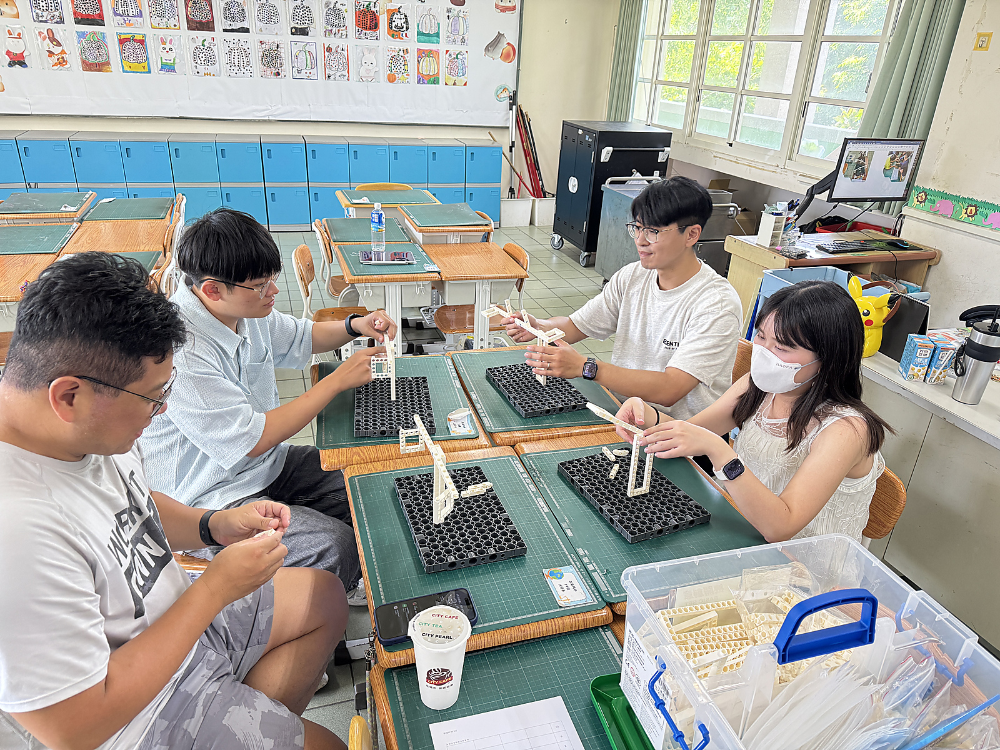
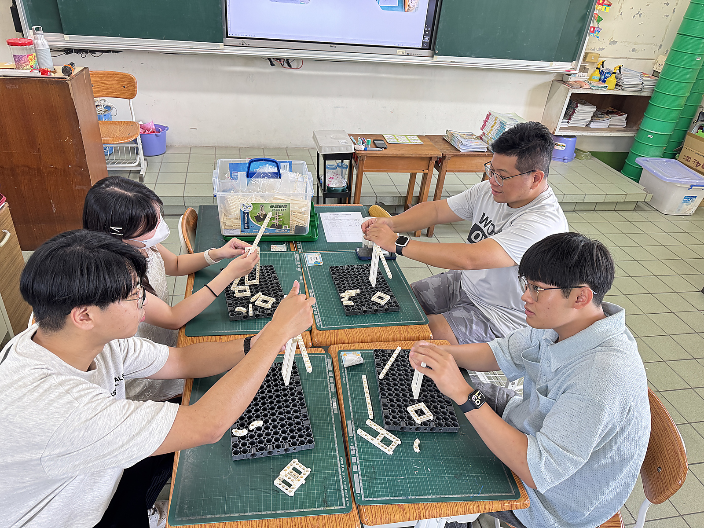
社群走出校園跨校取經，向世界機關王指導名師深度請益：
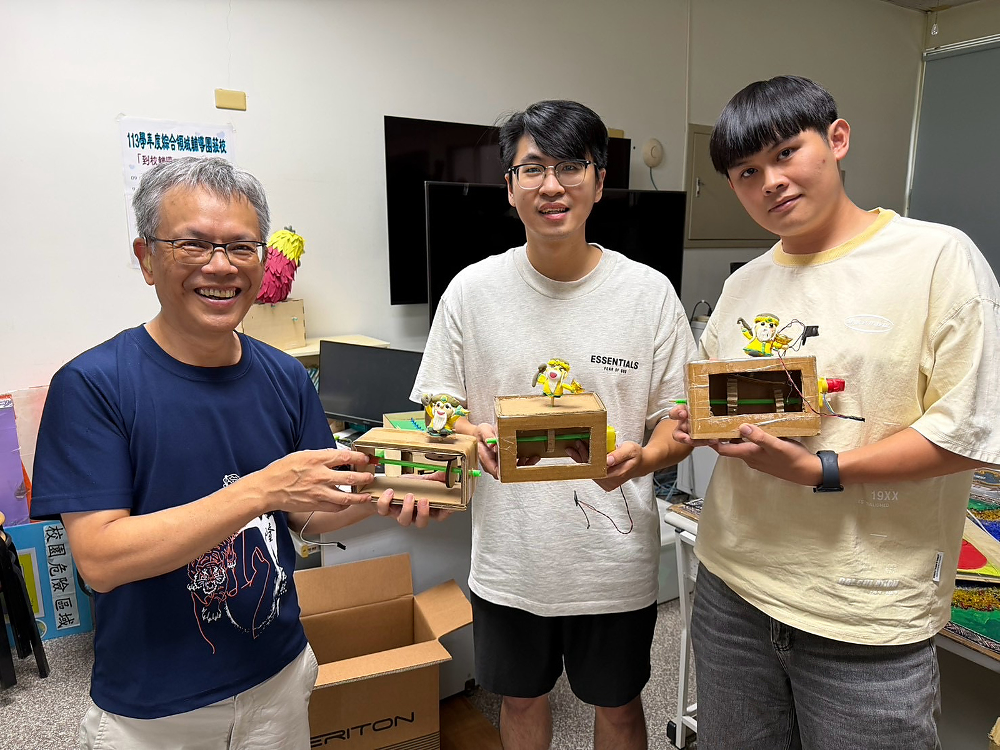
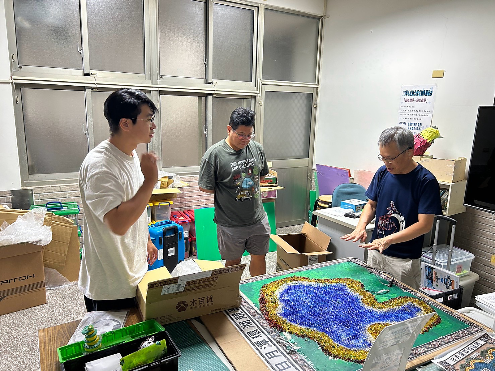
真實走入教學現場公開試教，以嚴謹板書架構與科技實測雙軌並進：
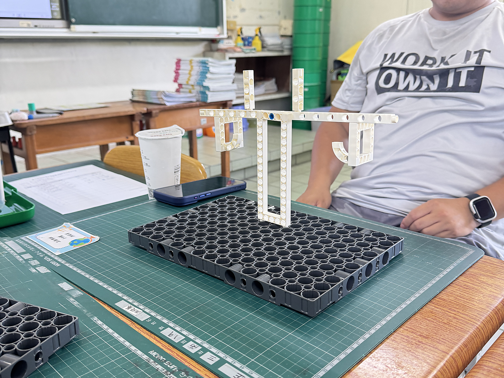
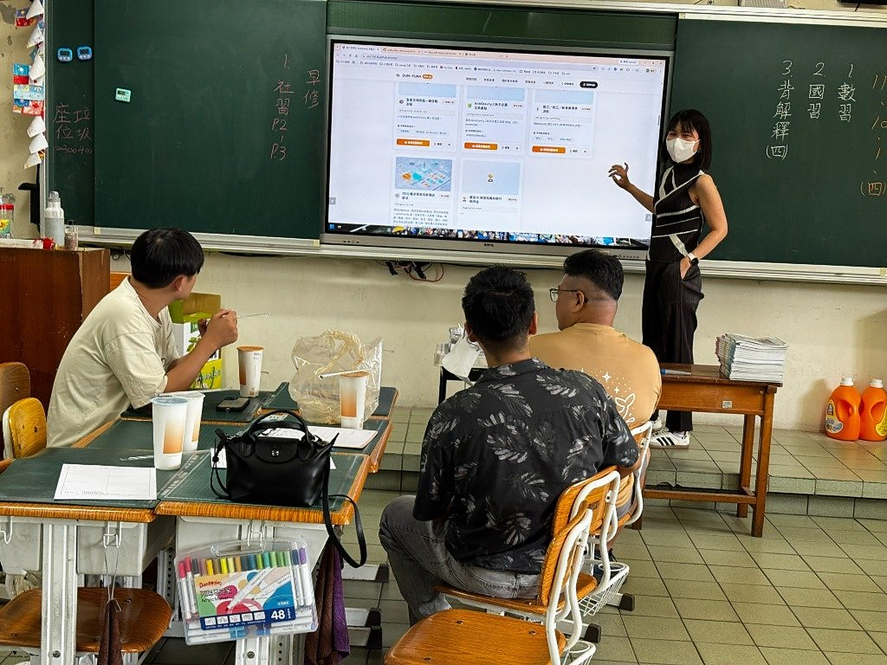
秉持嚴謹科學實證精神，以前後測量化數據引導教具與教案反覆優化：
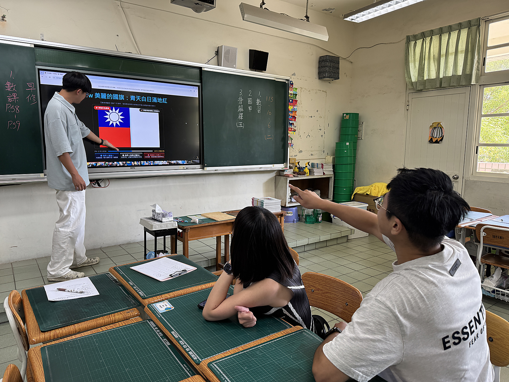
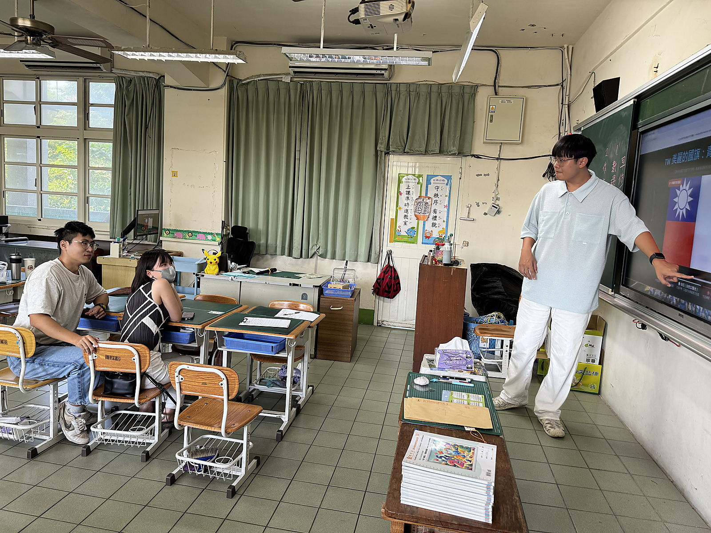
將課堂微型天平無縫昇華為世界機關王 8 迴連鎖關卡，完美收官：
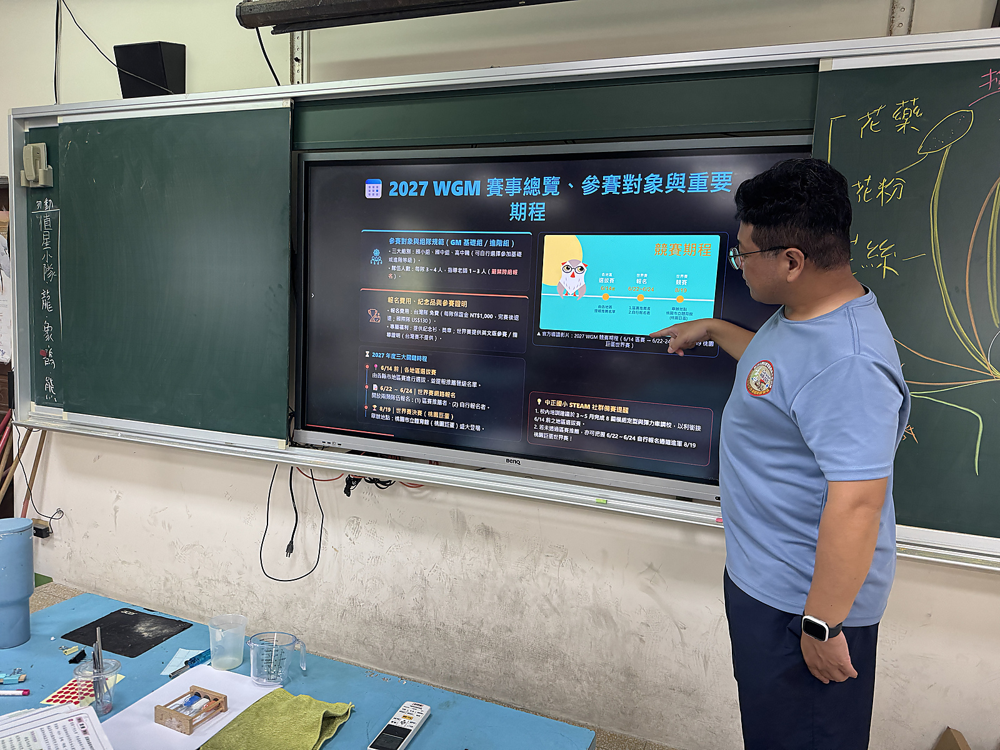
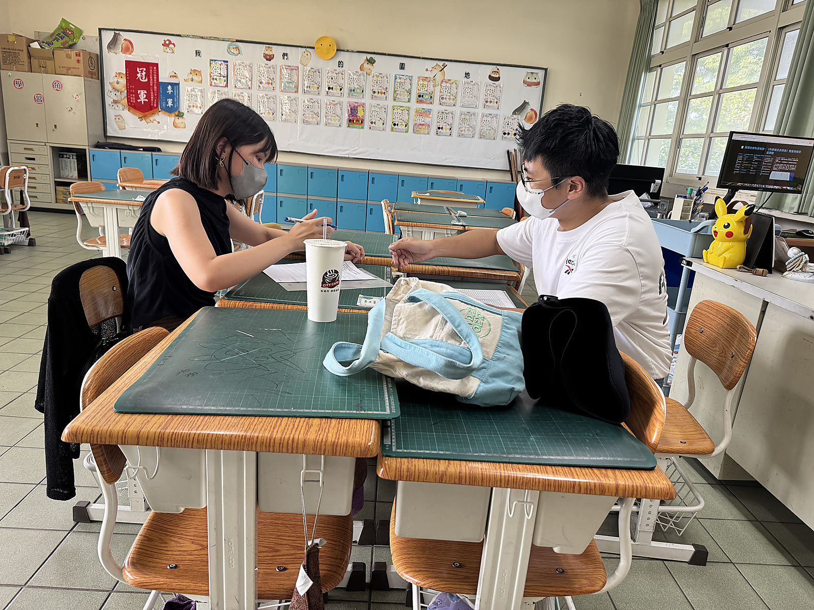
依教育局規定完整繳交之附件 6 正式教案設計，內嵌標準工程藍圖：
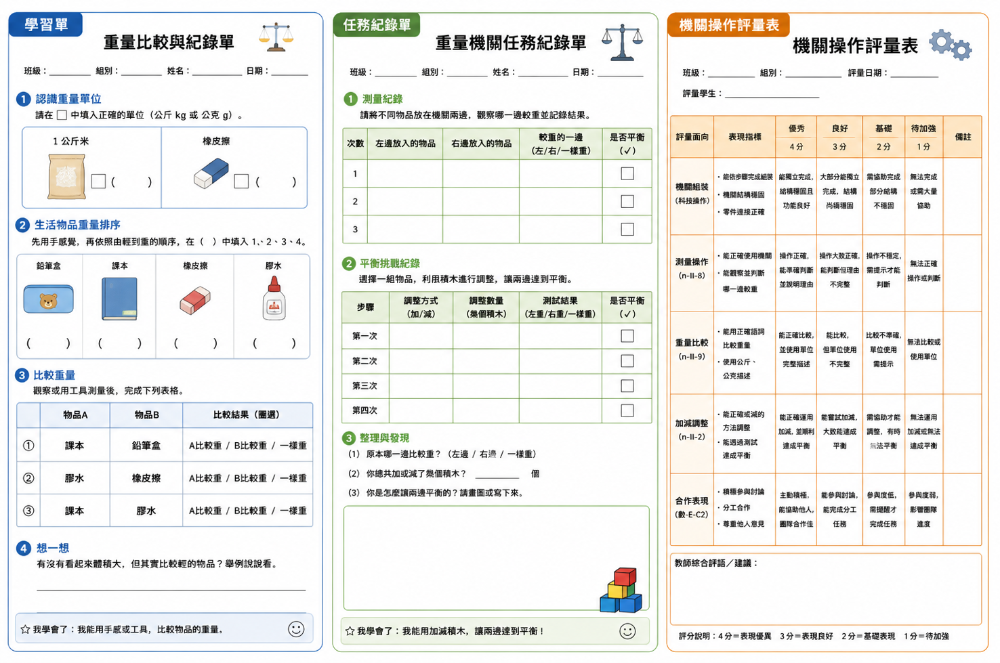
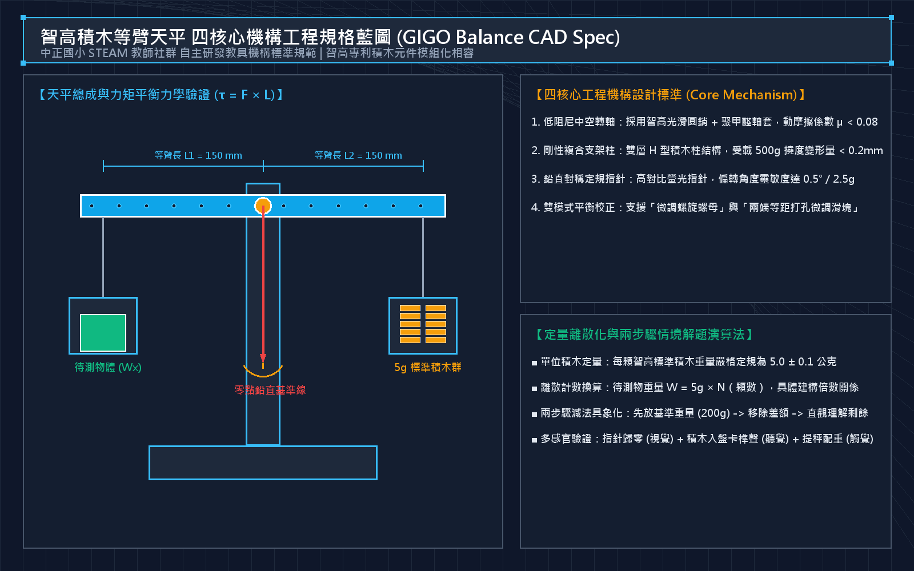
扎實研究、入班實證、永續傳承，建立中正國小特色課程品牌：
• 重量概念前後測理解度大躍升 +28.5%。
• 學生動手實作滿意度達 96.8%。
• 徹底掃除「指針未歸零」與「讀錯格值」重大困境！
• 正式教案設計（附件6）已依規完整送件典藏。
• 研發之天平教具模組推廣至校內三、四年級各班。
• 結合 micro:bit 體育感測，橫向拓展自然與科技領域。
• 感謝臺中市教育局與 STEAM 計畫團隊的全力輔導。
• 感謝南投鯉魚國小陳建安老師的無私經驗傳授。
• 中正國小團隊將持續深耕，點亮每位孩子的創客之光！